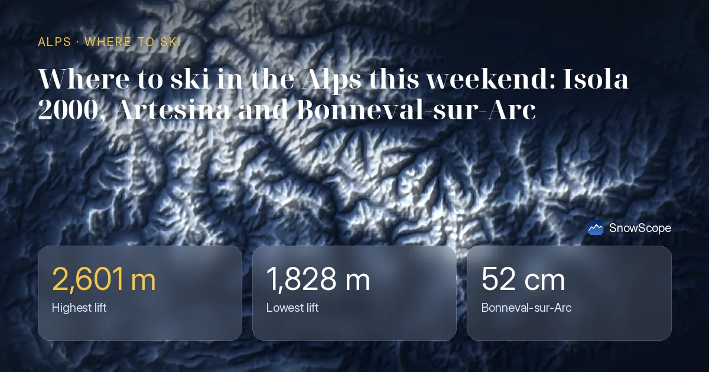
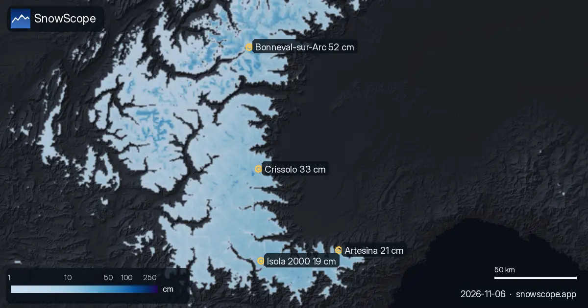
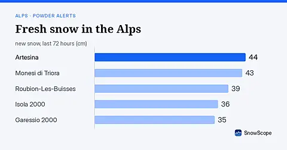

Where to ski in the Alps this weekend: Isola 2000, Artesina and Bonneval-sur-Arc
This weekend in the Alps, Bonneval-sur-Arc offers the deepest snow at 52 cm on its upper slopes, backed by a week of heavy falls. Isola 2000 and Artesina received similar totals but hold less snow today; your choice depends on how high you want to climb and which aspect catches your eye.
See the live snow forecast for Isola 2000 in the SnowScope appSnow depth, powder alerts and the 3D map, free.
Three resorts, three snow profiles
Bonneval-sur-Arc stands out with 52 cm above 2,900 m. The mid-mountain (2,371 m) has 6 cm, the base only 1 cm—the typical early-season picture of snow clinging to altitude.
Isola 2000 received an identical 62 cm in 72 hours but shows 19 cm on upper slopes today. The top (2,601 m) SnowScope shows 17 cm; the mid-level (2,214 m) drops to 15 cm. Artesina also got 61 cm in three days yet holds just 21 cm above 2,091 m, with almost none at mid-mountain or base.
| Resort | Snow depth | New snow, 72 h | Coming, next days | Top |
|---|---|---|---|---|
| Isola 2000 | 19 cm | 62 cm | 3 cm | 2,601 m |
| Artesina | 21 cm | 61 cm | 1 cm | 2,091 m |
| Bonneval-sur-Arc | 52 cm | 32 cm | 7 cm | 2,948 m |
| Crissolo | 33 cm | 46 cm | 4 cm | 2,308 m |

Why height matters this weekend
Early November snow is fragile. At Isola 2000, the freezing level on Saturday peaks at 2,270 m, then climbs to 2,510 m on Sunday—meaning lower slopes turn to porridge while the top stays firm. Crissolo shows a similar pattern, with its mid-level (1,922 m) warmer than its peak (2,308 m) across both days.
Bonneval-sur-Arc's greater height (top at 2,948 m) gives it an advantage: even on Sunday, when freezing levels rise across the region, the summit stays safely above the thaw. If you have the fitness and legs for 2,900 m, Bonneval-sur-Arc is your best bet for frozen, skiable snow through Sunday.

Aspect and exposure: where to look
North-facing slopes are your friend this weekend. South-facing terrain loses snow fastest in the sun, especially at mid-elevations where the new cover is thin. At all three resorts, seek the shaded sides of the valley and the ridgelines facing north.
Rocks and grass hide just below thin early-season snow. Stay on open, groomed pistes rather than venturing into couloirs or forested slopes where the base may be exposed. A single day in November sun can turn a hidden rock into a threat.
What the weekend brings
Saturday and Sunday are quiet: almost no fresh snow is forecast. Isola 2000 may see a trace on Saturday, Bonneval-sur-Arc 1 cm. By Monday the picture shifts slightly, with Bonneval-sur-Arc forecast to pick up 6 cm—but the weekend itself is about working the existing base.
Forecasts can shift in the days ahead. Check the SnowScope map again on Friday evening before you drive, especially if you are heading to a lower resort where a small change in the freezing level affects whether slopes stay skied or turn to slush.
Before you go
Not all deep snow means open lifts. Resorts decide independently when to open; visit their websites to confirm operating hours. Many close mid-week in November and open only Friday to Sunday.
If you plan to leave the piste—touring, sidecountry, or off-piste descents—read the official avalanche bulletin for your area first. Early-season slides are rare but possible after a big dump.
Tips for skiers
- Aim for elevations above 2,400 m this weekend: freezing levels are rising, and lower slopes will soften by afternoon even on Saturday.
- Prioritize north-facing slopes and shaded valleys: they hold snow longest and stay firm longest as the sun climbs higher each day.
- Early snow is thin. Rocks and grass lurk just below the surface on ungroomed terrain. Ski the marked, groomed runs until the base thickens in late November.
- Check the resort website before you drive: many Alpine resorts open only weekends in early November.
- Get a powder alert in the SnowScope app to know when any of these resorts receives fresh snow.
About these numbers
Resort snow depths are the deepest snow on the resort's upper slopes on the date shown; they are estimates for an area, not a measurement at one point. Forecasts can change. Always read the official avalanche bulletin before going off-piste.
Official avalanche bulletins: EAWS (Alps)
Cite this report
For research, teaching or the press: the numbers and charts are free to reuse under CC BY 4.0 with this citation.
SnowScope (2026), Where to ski in the Alps this weekend: Isola 2000, Artesina and Bonneval-sur-Arc, https://snowscope.app/blog/en/2026/11/alps-where-to-ski-this-weekend-6-november-2026.html, accessed 2026-11-06
SnowScope (Atlas Labs). (2026, November 6). Where to ski in the Alps this weekend: Isola 2000, Artesina and Bonneval-sur-Arc. SnowScope snow reports. https://snowscope.app/blog/en/2026/11/alps-where-to-ski-this-weekend-6-november-2026.html
BibTeX
@misc{snowscope2026alpswheretoskithisweeken,
author = {{SnowScope (Atlas Labs)}},
title = {Where to ski in the Alps this weekend: Isola 2000, Artesina and Bonneval-sur-Arc},
year = {2026},
month = nov,
howpublished = {\url{https://snowscope.app/blog/en/2026/11/alps-where-to-ski-this-weekend-6-november-2026.html}},
note = {Published 2026-11-06 12:45 UTC; accessed 2026-11-06}
}· CC BY 4.0 · Methods, data and tools →
Isola 2000: snow and temperature by height, this winter vs last (tools) →
Follow Isola 2000
Free: a message when fresh snow is coming, and the forecast every morning.
More snow reports

Isola 2000 received 62 cm of new snow in 72 hours by 6 November. Early-season powder at altitude across the southern Alps.

Artesina got 44 cm of new snow in the last 72 hours. It now has about 20 cm on its upper slopes.